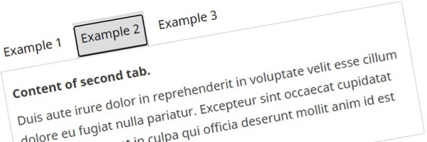

Carousel – Standard web pages – CRA web service manual
Responsive carousels are in-page components used to display multiple different items within the same content space. Carousels dynamically stacks multiple sections of content, transforming them into a tabbed interface.
On this page
- How to use
- How to implement
- Design options
- Configuration options and events
- Complementary components and functions
How to use
- Responsive carousels are a set of 2 to 4 rotating slides that refresh on page load, with user-controls to rotate through the slides and to toggle to auto-rotation
- The default controls for stepping through the slides are thumbnails for large screens and forward/back buttons, including an “Item X of X” message for small screens
- When auto-play is activated, the default slide for the start of auto-rotation is slide one
- The default timing for auto-rotation is 9 seconds per slide
- The default style for transitioning between slides is horizontal sliding transition, starting from the right edge
- Carousels may be implemented at various sizes, ranging from a single column to the full width of the screen
- Each slide is made up of a combination of text and imagery, with the option to add a button link
Correct use
- Use only for awareness campaigns or to notify about new information in a topic
- Ensure the content in each slider all promotes the same type of information from a singular topic
- Both text and imagery must be linked, but all links in the carousel slide must point to the same destination
- Any call to action must be described in the hyperlink text or button link
- Use the defined presentation classes included in the Canada.ca WET theme
- For image sizing details, consult the images component page
Incorrect use
- Do not use if the content can be rephrased into concise, plain language
- Do not embed text into imagery. Textual elements must be coded as HTML text
- Do not use more than 65 characters for all of the text on a carousel slide (including link label)
How to implement
- Add a
divelement to the page with the classwb-tabsand either the styling classcarousel-s1orcarousel-s2. - Add a
divelement to the previousdivelement with the classtabpanels. - For each tab panel, add a
divelement with a unique id,role="tabpanel"andclass="out". For the tab panel that should be opened by default, replace theoutclass within. - Specify the tab panel transition type by adding one of the following classes to the
divelement for each of the tab panels:fade: Fading transitionslide: Horizontal sliding transitionslidevert: Vertical sliding transition
-
Code example - transitions
<div class="wb-tabs carousel-s1"> <div class="tabpanels"> <div role="tabpanel" id="panel1" class="in fade"> </div> <div role="tabpanel" id="panel2" class="out fade"> </div> </div> </div>
- Add a
figureelement to each tab panel. - Add content to each
figureelement:- Image: Add an image to the
figureelement followed by afigcaptionelement with the caption for the tab panel.-
Code example - figure with an image
<div role="tabpanel" id="panel1" class="in fade"> <figure> <img src="img/protect-environment.jpg" alt="Panel 1" /> <figcaption> <p> Take Note: <a href="https://www.tc.gc.ca/eng/civilaviation/opssvs/general-personnel-changes-1814.htm">Renewal of the Aviation Document Booklet</a> <br /> Learn more about <a href="https://www.tc.gc.ca/eng/air-menu.htm">air transportation</a> in Canada. </p> </figcaption> </figure> </div>
-
- Video: Add a multimedia player to the
figureelement according to the multimedia player documentation.-
Code example - figure with a video
<div role="tabpanel" id="panel1" class="in fade"> <figure class="wb-mltmd"> <video poster="../multimedia/demo/video1-en.jpg" title="Looking for a Job"> <source type="video/webm" src="https://video2.servicecanada.gc.ca/video/boew-wet/te-lj-eng.webm" /> <source type="video/mp4" src="https://video2.servicecanada.gc.ca/video/boew-wet/te-lj-eng.mp4" /> <track src="../multimedia/cpts-lg-en.html" kind="captions" data-type="text/html" srclang="en" label="English" /> </video> <figcaption> <p>Looking for a Job (<a href="../multimedia/cpts-lg-en.html">Transcript</a>)</p> </figcaption> </figure> </div>
-
- Other content: Add content to the
figureelement followed by afigcaptionelement with the caption for the tab panel.-
Code example - figure with other content
<div role="tabpanel" id="panel1" class="in fade"> <figure> <table> ... </table> <figcaption> <p>Tab panel caption</p> </figcaption> </figure> </div>
-
- Image: Add an image to the
- Add a
ulelement withrole="tablist"at the start of thedivelement with thewb-tabsclass. - For each tab panel, add an
lielement to the previousulelement. Addclass="active"for the tab panel that should be open by default. - Add an
aelement to eachlielement - Add to each
lielement anaelement with the label of the tab and that links to the associated tab panel.-
Code example - links to each panel
<ul role="tablist"> <li class="active"><a href="#panel27">Tab 1</a></li> <li><a href="#panel28">Tab 2</a></li> ... </ul>
-
- Optional: Override the default settings using the configuration options.
- Optional: Add an external link that affects which tab is visible. The href attribute includes the id of the panel to make visible. (v4.0.8+)
-
Code example - external link
<p><a href="#panel3" class="wb-tabs-ext">Show the third panel</a></p>
-
Design options
Basic carousel
Modify the design
Appearance

Slide 1: Your text...

Slide 2: Your text...
HTML code
<div class="wb-tabs carousel-s2 carousel-s2 show-thumbs">
<ul role="tablist">
<li class="active"><a href="#panel1">Slide 1: ...</a></li>
<li><a href="#panel2">Slide 2: ...</a></li>
</ul><ul role="tablist">
<li class="active"><a href="#panel1"><img src="url_mage_1" alt="..." /></a></li>
<li><a href="#panel2"><img src="url_mage_2" alt="..." /></a></li>
</ul>
<div class="tabpanels">
<div role="tabpanel" class="in fade">
<figure>
<img src="url_mage_1" class="img-responsive full-width" alt="" />
<figcaption>
<p>
Slide 1: Your text...
</p>
</figcaption>
</figure>
</div>
<div role="tabpanel" class="out fade">
<figure>
<img src="url_mage_2" alt="" />
<figcaption>
<p>
Slide 2: Your text...
</p>
</figcaption>
</figure>
</div>
</div>
</div>Prototyping libraries
The following prototyping libraries are currently being developed and will be available to download once the CRA web service manual is officially launched:
- Axure library
- Figma UI kit
Multimedia player
Appearance
The Canada Revenue Agency – We’re more than just taxes (Transcript)
HTML code
<div class="wb-tabs carousel-s2">
<ul role="tablist">
<li class="active"><a href="#panel19">Tab 1</a></li>
<li><a href="#panel20">Tab 2</a></li>
</ul>
<div class="tabpanels">
<div role="tabpanel" id="panel19" class="in fade">
<figure class="wb-mltmd">
<video title="Video: Title ..." id="wb-auto-4-md" poster="image_source">
<source src="video_source" type="video/mp4">
<track kind="captions" src="Captions_source" srclang="en" label="English" data-type="application/ttml+xml">
</video>
<figcaption>
<p>Title ... (<a href="transcript_source">Transcript</a>)</p>
</figcaption>
</figure>
</div>
</div>
</div>
Prototyping libraries
The following prototyping libraries are currently being developed and will be available to download once the CRA web service manual is officially launched:
- Axure library
- Figma UI kit
Configuration options and events
For configuration options and events, refer to: Tabbed interface on GitHub.
Complementary components and functions
Additional add-on features and behaviours are available.
-
